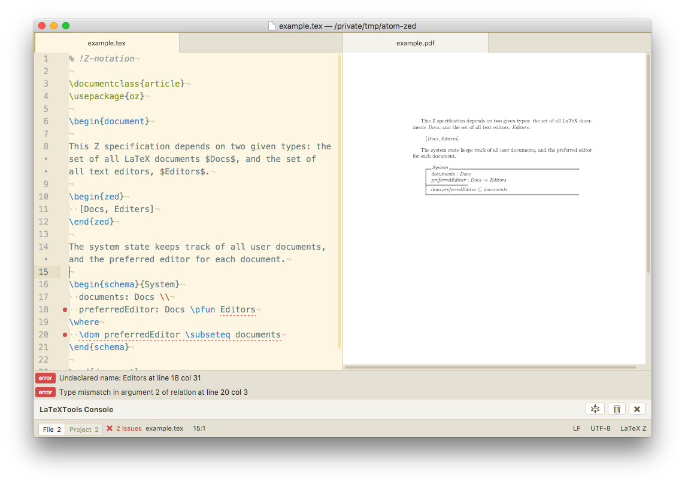

Z specification with Atom
Z notation is a formal specification language based on typed set theory and predicate logic. With this relatively simple mathematical grounding, Z is a useful pedagogic introduction to formal methods, and a useful formal method to apply when consumers of the output aren’t already trained for it.
However, the development of Z mostly involves tools which are rather dated. This article shows how to use Atom as a modern Z authoring studio, for small to medium specifications.

Essential ingredients: LaTeX
Z notation is primarily authored in LaTeX, so the first step is writing effective LaTeX in Atom.
There are two approaches to this. One is to use Markdown for prose, and embed LaTeX directly, using [Pandoc] to produce PDF output. The downside of this is that Pandoc has no straightforward way to require a LaTeX package, and so including oz.sty or an equivalent means writing a custom preamble.
The second approach is the one I favour: write in LaTeX, use the latextools package to build PDF output, and use the pdf-view package to preview the PDF in a side-by-side panel.
Essential ingredients: type checking
Z notation is machine checkable; the syntax and types can be verified automatically. However, the tools to do this aren’t always kept up to date: the most current is CZT, the Community Z Tools, many others are either now broken links, or ten years out of date.
Using CZT isn’t a great experience, particularly for beginners. It offers an Eclipse-based IDE, with a project concept and file naming requirements in conflict with LaTeX naming requirements.
CZT also offers a command line typechecker, and so I created an Atom package, linter-czt, to invoke that typechecker as a service provider for the linter package.
Usage of linter-czt
Because it’s not a good idea to typecheck all LaTeX files, the CZT linter package introduces a new grammar for Z specifications, with scope text.tex.latex.zed. You can either select the LaTeX Z grammar from the grammar selection list (click on LaTeX in the status bar for a .tex file), follow the CZT approach and name your file with a .zed notation, or put % !Z-notation as the first line in your file.
Interpreting messages is not made any easier by the wrapper of a modern editor over a dated typechecker, so there’s no substitute for experience and understanding when it comes to writing meaningful Z.
The CZT distribution requires a Java 8 runtime, and a binary is included in the Atom package, with a patch to provide better location information applied.
Install all packages using either apm or the GUI settings install tab.